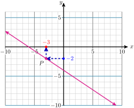
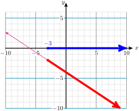
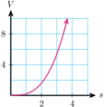
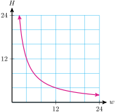
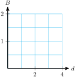
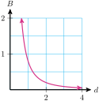

Section A.5 Chapter 5 Functions
Subsection A.5.1 Functions
Subsubsection A.5.1.1 New vocabulary
Write a definition or description for each term. You can find answers in Section 5.1 of your textbook.
- Function
- Input variable
- Output variable
- Function value
- Function notation
Identify each term above, or give an example, for this situation: At time \(t\) seconds, the height of a basketball above the ground, \(h\text{,}\) in feet, is given by
\begin{equation*}
~~h=-16t^2+20t+5\text{.}
\end{equation*}
Answer.
- \(h\) is a function of \(t\text{.}\)
- The input variable is \(t\text{.}\)
- The output variable is \(h\text{.}\)
- The function value for \(t=1\) is \(h=9\text{.}\)
- \(\displaystyle h=f(t)\)
Subsubsection A.5.1.2 Solve non-linear equations
To solve simple non-linear equations, we "undo" the operation performed on the variable.
Example A.5.2.
Solve the equation \(~~5 \sqrt{t} = 83\)
Solution.
To "undo" a square root, we square both sides of the equation. First, we isolate the square root.
\begin{align*}
\dfrac{5 \sqrt{t}}{\alert{5}} \amp = \dfrac{83}{\alert{5}} \amp \amp \blert{\text{Divide both sides by 5.}}\\
(\sqrt{t})^2 \amp =(16.6)^2 \amp \amp \blert{\text{Square both sides.}}\\
t \amp =275.56
\end{align*}
Example A.5.3.
Solve the equation \(~~\dfrac{15}{y}=45\)
Solution.
If the variable is in the denominator of a fraction, we must first clear the fraction.
\begin{align*}
\alert{y}\left(\dfrac{15}{y}\right) \amp = 45 \cdot \alert{y} \amp \amp \blert{\text{Multiply both sides by} ~y.}\\
15 \amp = 45y \amp \amp \blert{\text{Divide both sides by 45.}}\\
y \amp =\dfrac{15}{45}=\dfrac{1}{3}
\end{align*}
Checkpoint A.5.4.
Solve the equation \(~~\dfrac{4.8}{w}=3\)
Answer.
\(1.6\)
Checkpoint A.5.5.
Solve the equation \(~~18=36\sqrt{q}\)
Answer.
\(\dfrac{1}{4}\)
Subsection A.5.2 Graphs of Functions
Subsubsection A.5.2.1 Function notation
We can use function notation to describe a graph.
Fill in the blanks:
- The point \((a,b)\) lies on the graph of \(f\) if and only if .
- Each point on the graph of \(y=f(x)\) has coordinates .
- A graph of a function is increasing if the values get larger as we read from left to right.
- The maximum value of a function is the of the highest point on the graph.
Checkpoint A.5.6.
How do you know that the point \((1,9)\) lies on the graph of \(f(t)=-16t^2+20t+5\) ?
Answer.
Because \(f(1)=9\text{.}\)
Checkpoint A.5.7.
What are the coordinates of any point on the graph of \(h=f(t)\) ?
Answer.
\((t, f(t))\)
Subsubsection A.5.2.2 Solve graphically
Every point on the graph of an equation \(y=f(x)\) tells us the solution of the equation for a particular value of \(y\text{.}\)
Example A.5.8.
Use the graph of \(y=\dfrac{-2}{3}x-4\) to solve the equation
\begin{equation*}
\dfrac{-2}{3}x-4=-2\text{.}
\end{equation*}
Solution.
We see that \(y\) has been replaced by \(-2\) in the equation for the graph. So we look for the point on the graph that has \(y\)-coordinate \(-2\text{.}\)
This point, labeled \(P\) on the graph at right, has \(x\)-coordinate \(-3\text{.}\) Because it lies on the graph, the point \(P(-3,-2)\) is a solution of the equation \(y=\dfrac{-2}{3}x-4\text{.}\)

But this statement also tells us that \(-3\) is a solution of the equation \(\dfrac{-2}{3}x-4=2\text{.}\) You can check that substituting \(x=-3\) into this equation produces a true statement.
Example A.5.9.
Use the graph of \(y=\dfrac{-2}{3}x-4\) to solve the inequality
\begin{equation*}
\dfrac{-2}{3}x-4 \le -2\text{.}
\end{equation*}
Solution.
We would like to find the \(x\)-coordinates of all points on the graph that have \(y\)-coordinate less than or equal to \(-2\text{.}\) These points on the graph are indicated by the heavy portion of the line.
The \(x\)-coordinates of these points are shown by the heavy portion of the \(x\)-axis. The solution is \(x \ge -3\text{,}\) or in interval notation, \([-3,\infty)\) .

Checkpoint A.5.10.
Use the graph to solve the equation or inequality. (Note the scales on the axes.) Show your solutions on the graph. Then verify your solutions by solving algebraically.
- \(\displaystyle -9-\dfrac{x}{4}=-2\)
- \(\displaystyle -9-\dfrac{x}{4} \ge -5\)

Answer.
- \(\displaystyle x =-28\)
- \(\displaystyle x \le -16\)
Checkpoint A.5.11.
Use the graph to solve the equation or inequality. (Note the scales on the axes.) Show your solutions on the graph. Then verify your solutions by solving algebraically.
- \(\displaystyle 7-\dfrac{2x}{3}=3\)
- \(\displaystyle 7-\dfrac{2x}{3} \lt -1\)

Answer.
- \(\displaystyle x =6\)
- \(\displaystyle x \gt 12\)
Subsection A.5.3 Some Basic Graphs
Subsubsection A.5.3.1 Evaluate cube roots
It is a good idea to become familiar with the first few perfect cubes:
\begin{equation*}
2^3=8~~~~~~3^3=27~~~~~~4^3=64~~~~~~5^3=125~~~~~~6^3=216
\end{equation*}
and so on.
Example A.5.12.
Evaluate each cube root.
- \(\displaystyle \sqrt[3]{64}\)
- \(\displaystyle \sqrt[3]{-125}\)
- \(\displaystyle \sqrt[3]{1}\)
- \(\displaystyle \sqrt[3]{\dfrac{-1}{8}}\)
Solution.
- \(4^3=64,~\) so \(~\sqrt[3]{64}=4\)
- The cube root of a negative number is negative.\begin{equation*} (-5)^3=-125,~~\text{so}~~\sqrt[3]{-125}=-5 \end{equation*}
- \(1^3=1,~\) so \(~\sqrt[3]{1}=1\)
- We can take the cube root of a fraction by taking the cube root of its numerator and denominator.\begin{equation*} \sqrt[3]{\dfrac{-1}{8}} = \dfrac{\sqrt[3]{-1}}{\sqrt[3]{8}} = \dfrac{-1}{2} \end{equation*}
Example A.5.13.
Use a calculator to evaluate the cube root. Round to thousandths.
- \(\displaystyle \sqrt[3]{347}\)
- \(\displaystyle \sqrt[3]{0.85}\)
- \(\displaystyle \sqrt[3]{-9}\)
Solution.
On a scientific calculator, look for the key labeled \(\boxed{\sqrt[3]{\hphantom{1}\vphantom{1}}}\text{.}\) On a graphing calculator, press MATH 4
- \(\displaystyle \sqrt[3]{347} \approx 7.027\)
- \(\displaystyle \sqrt[3]{0.85} \approx 0.947\)
- \(\displaystyle \sqrt[3]{-9} \approx -2.080\)
Checkpoint A.5.14.
Evaluate \(\sqrt[3]{-0.5}\text{.}\) Round to thousandths.
Answer.
\(-0.794\)
Checkpoint A.5.15.
Evaluate \(\sqrt[3]{81}\text{.}\) Round to thousandths.
Answer.
\(4.327\)
Subsubsection A.5.3.2 Evaluate absolute values
The definition of how to take an absolute value may look complicated, but it just says two things:
- If the number is positive, leave it alone.
- If the number is negative, put another negative in front, which will make the number positive.
Example A.5.16.
Simplify each expression.
- \(\displaystyle |-3|\)
- \(\displaystyle -|3|\)
- \(\displaystyle -(-3)\)
- \(\displaystyle -|-3|\)
Solution.
The absolute value of any number is positive (or zero). We can think of the absolute value of a number as its distnce from on a number line.
- \(-3\) is 3 units from 0, so \(|-3|=3\text{.}\)
- \(-|3|\) is the opposite of \(|3|\text{,}\) so \(-|3|=-3\text{.}\)
- The opposite of \(-3\) is \(3\text{,}\) so \(-(-3)=3\text{.}\)
- \(-|-3|\) is the opposite of \(|-3|\text{,}\) so \(-|-3|=-3\text{.}\)
Example A.5.17.
Suppose \(x\) represents \(-8\text{.}\) Evaluate each expression.
- \(\displaystyle -x\)
- \(\displaystyle |x|\)
- \(\displaystyle |-x|\)
Solution.
- \(\displaystyle -x = -(-8) = 8\)
- \(\displaystyle |x| = |-8| = 8\)
- \(\displaystyle |-x| = |-(-8)| = 8\)
Checkpoint A.5.18.
Simplify \(-|-12|\text{.}\)
Answer.
\(-12\)
Checkpoint A.5.19.
Simplify \(|-25|\text{.}\)
Answer.
\(25\)
Checkpoint A.5.20.
Simplify \(-(-90)|\text{.}\)
Answer.
\(90\)
Subsubsection A.5.3.3 Use the order of operations
Recall the order of operations:
- Simplify what’s inside parentheses (or absolute value bars) first.
- Next evaluate all powers and roots.
- Then perform all multiplications and divisions in order from left to right.
- Finally, perform all additionas and subtractions in order from left to right.
Example A.5.21.
Simplify \(~|2|-4|3-8|\)
Solution.
Absolute value bars are a grouping device. We simplify expressions within absolute value bars first.
\begin{align*}
|2|-4|\alert{3-8}| \amp = |2|- 4|\alert{-5}| \amp \amp \blert{\text{Evaluate absolute values.}}\\
\amp = 2-4(5) \amp \amp \blert{\text{Multiply.}}\\
\amp =2-20=18
\end{align*}
Example A.5.22.
Simplify \(~\dfrac{8-2\sqrt[3]{11.375+2.5^3}}{8-4}\)
Solution.
Simplify the expression under the radical first.
\begin{align*}
\dfrac{8-2\sqrt[3]{\alert{11.375+2.5^3}}}{8-4} \amp = \dfrac{8-2\sqrt[3]{\alert{27}}}{8-4} \amp \amp ~\blert{\text{Evaluate the radical.}}\\
amp =\dfrac{8-2(3)}{8-4} \amp \amp \begin{array}{l}
\blert{\text{Simplify numerator }}\\
\blert{\text{and denominator.}}
\end{array}\\
\amp =\dfrac{8-6}{4}\\
\amp = \dfrac{2}{4} = \dfrac{1}{2}
\end{align*}
Checkpoint A.5.23.
Simplify \(~~3\sqrt[3]{\dfrac{125}{216}} + \dfrac{4}{5} \sqrt[3]{-512}~~~\text{.}\) Follow the order of operations.
Answer.
\(\dfrac{-39}{10}\)
Checkpoint A.5.24.
Simplify \(~~-3|3-6|-4|-4-3|~~~\text{.}\) Follow the order of operations.
Answer.
\(-37\)
Subsection A.5.4 Direct Variation
Subsubsection A.5.4.1 Find the constant of variation
If we know the type of variation and the coordinates of one point ont the graph, we can find the variation equation.
Example A.5.25.
Find the constant of variation and the variation equation:
\(~~~y\) varies directly with the square of \(x\text{,}\) and \(y=100\) when \(x=2.5\text{.}\)
Solution.
Because \(y\) varies directly with the square of \(x\text{,}\) we know that \(y=kx^2\text{.}\) We substitute the given values to find
\begin{align*}
100 \amp = k(2.5)^2 \amp\amp \blert{\text{Solve for}~k.}\\
k \amp = \dfrac{100}{2.5^2} = 16
\end{align*}
The constant of variation is 16, and the variation equation is \(~y=16x^2\text{.}\)
Checkpoint A.5.26.
Find the constant of variation and the variation equation:
\(y\) varies directly with the cube of \(x\text{,}\) and \(y=119,164\) when \(x=6.2\text{.}\)
Answer.
\(k=500\) and \(y=500x^3\)
Subsubsection A.5.4.2 Sketch a variation graph
The graphs of direct variations are transformations of the basic graphs \(y=x^n\text{.}\)
Example A.5.27.
Sketch a graph of \(V=0.2s^3\text{.}\)
Solution.
We know that the graph has the shape of the basic function \(y=x^3\text{,}\) so all we need are a few points to "anchor" the graph.
\begin{align*}
\text{If } s=1, \amp V = 0.2(1)^3 = 0.2\\
\text{If } s=2, \amp V = 0.2(2)^3 = 1.6\\
\text{If } s=3, \amp V = 0.2(3)^3 = 5.4
\end{align*}
The graph is shown below.

Checkpoint A.5.28.
Plot three points and sketch a graph of \(d=\dfrac{3}{8}t^2\text{.}\)
Answer.

\(\left(1,\dfrac{3}{8}\right)\text{,}\) \(\left(2,\dfrac{3}{2}\right)\text{,}\) \((4,6)\)
Subsubsection A.5.4.3 Solve a variation equation
Example A.5.29.
Solve \(~231.90 = 18.85r^2~\)
Solution.
The equation is quadratic. We solve by extraction of roots.
\begin{align*}
231.90 \amp = 18.85 r^2 \amp\amp \blert{\text{Isolate the squared expression.}}\\
12.302 \amp = r^2 \amp\amp \blert{\text{Take square roots.}}\\
r \amp = 35
\end{align*}
Example A.5.30.
Solve \(~62x^3 = 4860.8~\)
Solution.
This equation is cubic. We isolate the variable, then take cube roots.
\begin{align*}
62x^3 \amp = 4860.8 \amp\amp \blert{\text{Divide both sides by 62.}}\\
x^3 \amp = 78.4 \amp\amp \blert{\text{Take cube roots.}}\\
x \amp = 16.9
\end{align*}
Checkpoint A.5.31.
Solve \(~1371.8 = 25R^3\)
Answer.
\(3.8\)
Checkpoint A.5.32.
Solve \(~6.3t^2 = 18.4\)
Answer.
\(1.7\)
Subsection A.5.5 Inverse Variation
Subsubsection A.5.5.1 Solve an inverse variation equation
Example A.5.33.
Solve \(~2.8125 = \dfrac{36}{n}\)
Solution.
We must first get the variable out of the denominator.
\begin{align*}
n(2.8125) \amp = \dfrac{36}{n} n \amp\amp \blert{\text{Multiply boyh sides by}~n.}\\
2.8125n \amp = 36 \amp\amp \blert{\text{Divide both sides by 2.8125.}}\\
n \amp = 12.8
\end{align*}
Example A.5.34.
Solve \(~0.5547 = \dfrac{1500}{d^2}\)
Solution.
We must first get the variable out of the denominator.
\begin{align*}
d^2(0.5547) \amp = \dfrac{1500}{d^2} d^2 \amp\amp \blert{\text{Multiply boyh sides by}~d^2.}\\
0.5547d^2 \amp = 1500 \amp\amp \blert{\text{Divide both sides by 0.5547.}}\\
d^2 \amp = 2704.16 \amp\amp \blert{\text{Take square roots.}}\\
d \amp = 52
\end{align*}
Checkpoint A.5.35.
Solve \(~13.03=\dfrac{380}{h^2}\)
Answer.
\(5.4\)
Checkpoint A.5.36.
Solve \(~0.065=\dfrac{12}{p}\)
Answer.
\(184.6\)
Subsubsection A.5.5.2 Sketch a variation graph
The graphs of inverse variations are transformations of the basic graphs \(y=\dfrac{1}{x^n}\text{.}\)
Example A.5.37.
Sketch a graph of \(H=\dfrac{48}{w}\text{.}\)
Solution.
We know that the graph has the shape of the basic function \(y=\dfrac{1}{x}\text{,}\) so all we need are a few points to "anchor" the graph.
\begin{align*}
\text{If } w=2, \amp H = \dfrac{48}{2} = 24\\
\text{If } w=6, \amp H = \dfrac{48}{6} = 8\\
\text{If } w=12, \amp H = \dfrac{48}{12} = 4
\end{align*}
The graph is shown below.

Checkpoint A.5.38.
Plot three points and sketch a graph of \(B=\dfrac{0.8}{d^2}\text{.}\)

Answer.
\((1,0.8),~(2,0.2),~(4,0.05)\)

Subsubsection A.5.5.3 Find the constant of variation
If we know the type of variation and the coordinates of one point on the graph, we can find the variation equation.
Example A.5.39.
Find the constant of variation and the variation equation:
\(~~~y\) varies inversely with the square of \(x\text{,}\) and \(y=4687.5\) when \(x=0.16\text{.}\)
Solution.
Because \(y\) varies inversely with the square of \(x\text{,}\) we know that \(y=\dfrac{k}{x^2}\text{.}\) We substitute the given values to find
\begin{align*}
4687.5 \amp = \dfrac{k}{0.16^2} \amp\amp \blert{\text{Solve for}~k.}\\
k \amp = 4687.5(0.16)^2=120
\end{align*}
The constant of variation is 120, and the variation equation is \(~y=\dfrac{120}{x^2}\text{.}\)
Checkpoint A.5.40.
Find the constant of variation and the variation equation:
\(y\) varies inversely with \(x\text{,}\) and \(y=31.25\) when \(x=640\text{.}\)
Answer.
\(k=20,000\) and \(y=\dfrac{20,000}{x}\)
Subsection A.5.6 Functions as Models
Subsubsection A.5.6.1 Properties of the basic functions
The eight basic functions are often used as models.
For these Examples, refer to the eight basic functions:
\begin{align*}
f(x) \amp = x \amp f(x) \amp = \abs{x} \amp f(x) \amp = x^2 \amp f(x) \amp = x^3\\
f(x) \amp = \sqrt{x} \amp f(x) \amp = \sqrt[3]{x} \amp f(x) \amp = \dfrac{1}{x} \amp f(x) \amp = \dfrac{1}{x^2}
\end{align*}
Example A.5.41.
Which of the eight basic functions are always increasing?
Solution.
\(f(x)=x,~~~f(x)=x^3,~~~f(x)=\sqrt{x},~~~f(x)=\sqrt[3]{x}\)
Example A.5.42.
Which of the eight basic functions are concave up for positive \(x\text{?}\)
Solution.
\(f(x)=x^2,~~~f(x)=x^3,~~~f(x)=\dfrac{1}{x},~~~f(x)=\dfrac{1}{x^2}\)
Checkpoint A.5.43.
Which of the eight basic functions are undefined at \(x=0\text{?}\)
Answer.
\(f(x)=\dfrac{1}{x},~~~f(x)=\dfrac{1}{x^2}\)
Checkpoint A.5.44.
Which of the eight basic functions are always non-negative?
Answer.
\(f(x)=\abs{x},~~~f(x)=x^2,~~~f(x)=\sqrt{x},~~~f(x)=\dfrac{1}{x^2}\)
Subsubsection A.5.6.2 Simplify absolute value functions
The piecewise definition of the absolute value function is
\begin{equation*}
f(x) =
\begin{cases}
x \amp \text{if} ~~x\ge 0\\
-x \amp \text{if} ~~x\lt 0
\end{cases}
\end{equation*}
To write the absolute value of some other algebraic expression, we replace \(x\) by the expression wherever \(x\) appears.
Example A.5.45.
Simplify the function \(~f(x)=|2x-8|~\) as a piecewise defined function.
Solution.
We use the definition of absolute value and replace \(x\) by \(2x-8\text{.}\)
\begin{equation*}
f(x) =
\begin{cases}
2x-8 \amp \text{if} ~~2x-8\ge 0\\
-(2x-8) \amp \text{if} ~~2x-8\lt 0
\end{cases}
\end{equation*}
Then we simplify each expression.
\begin{equation*}
f(x) =
\begin{cases}
2x-8 \amp \text{if} ~~x\ge 4\\
8-2x \amp \text{if} ~~x\lt 4
\end{cases}
\end{equation*}
Checkpoint A.5.46.
Simplify the function \(~f(x)=|6-3x|~\) as a piecewise defined function.
Answer.
\begin{equation*}
f(x) =
\begin{cases}
6-3x \amp \text{if} ~~x\le 2\\
3x-6 \amp \text{if} ~~x\gt 2
\end{cases}
\end{equation*}
Checkpoint A.5.47.
Simplify the function \(~f(x)=|1+4x|~\) as a piecewise defined function.
Answer.
\begin{equation*}
f(x) =
\begin{cases}
1+4x \amp \text{if} ~~x\ge \dfrac{-1}{4}\\
-1-4x \amp \text{if} ~~x\lt \dfrac{-1}{4}
\end{cases}
\end{equation*}
Subsubsection A.5.6.3 Use interval notation
Recall that square brackets on an interval mean that the endpoints are included, and round brackets mean that the endpoints are not included.
Example A.5.48.
Write each set with interval notation, and graph the set on a number line.
- \(\displaystyle 3 \le x \lt 6\)
- \(\displaystyle x \ge -9\)
- \(\displaystyle x \le 1~\text{or}~x\gt 4\)
- \(\displaystyle -8 \lt x \le 5~\text{or}~-1\le x \lt 3\)
Solution.
-
\([3,6).\) This is called a half-open or half-closed interval. \(3\) is included in the interval, but \(6\) is not included.

-
\([-9, \infty).\) We use round brackets next to the symbol \(\infty\) because \(\infty\) is not a specific number and is not included in the set.

-
\((-\infty,1] \cup (4, \infty).\) The word “or” describes the union of two sets. The symbol \(~\cup~\) is used for union.

-
\(\displaystyle (-8,-5] \cup [-1,3).\)

Checkpoint A.5.49.
Write each set with interval notation, and graph the set on a number line.
- \(\displaystyle -5 \lt x \le 3\)
- \(\displaystyle -6 \lt x \lt \infty\)
- \(\displaystyle x \lt -3 ~\text{or}~ x\ge -1\)
- \(\displaystyle -6 \le x \lt-4 ~\text{or}~ -2 \lt x \le 0\)
Answer.
-
\(\displaystyle (-5,-3]\)

-
\(\displaystyle (-6, \infty)\)

-
\(\displaystyle (-\infty,-3) \cup [-1,\infty)\)

-
\(\displaystyle [-6,-4) \cup (-2,0]\)